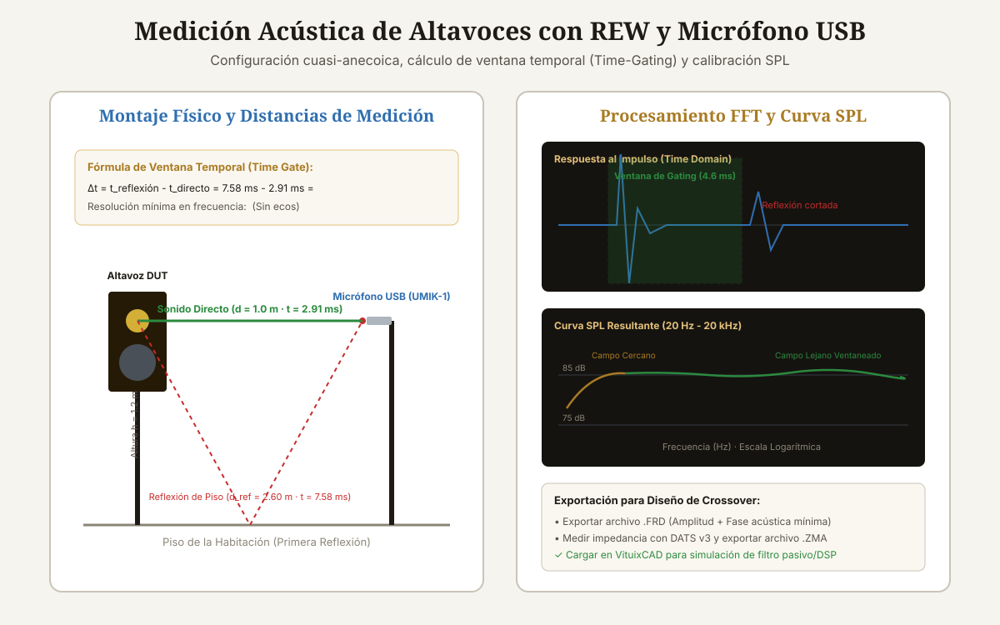

<!DOCTYPE html>
<html lang="es-CL">
<head>
<meta charset="UTF-8">
<meta name="viewport" content="width=device-width, initial-scale=1">

<title>Medición de Altavoces con REW y Micrófono USB</title>
<meta name="description" content="Cómo medir altavoces y salas con Room EQ Wizard (REW) y micrófono USB: time-gating cuasi-anecoico, respuesta en frecuencia SPL, fase acústica y diseño de crossovers.">
<meta name="author" content="Alberto Gallardo">
<meta name="robots" content="index,follow,max-image-preview:large">
<link rel="canonical" href="https://www.ukrabot.cl/blog/medicion-de-altavoces-con-rew-y-microfono-usb">

<meta property="og:type" content="article">
<meta property="og:title" content="Medición de Altavoces con REW y Micrófono USB">
<meta property="og:description" content="Cómo medir altavoces y salas con Room EQ Wizard (REW) y micrófono USB: time-gating cuasi-anecoico, respuesta en frecuencia SPL, fase acústica y diseño de crossovers.">
<meta property="og:image" content="https://www.ukrabot.cl/blog/medicion_rew_altavoces_esquema.svg">
<meta property="og:url" content="https://www.ukrabot.cl/blog/medicion-de-altavoces-con-rew-y-microfono-usb">
<meta property="og:locale" content="es_CL">
<meta property="og:site_name" content="Blog de Ingeniería Robótica">

<meta name="twitter:card" content="summary_large_image">
<meta name="twitter:title" content="Medición de Altavoces con REW y Micrófono USB">
<meta name="twitter:description" content="Cómo medir altavoces y salas con Room EQ Wizard (REW) y micrófono USB: time-gating cuasi-anecoico, respuesta en frecuencia SPL, fase acústica y diseño de crossovers.">
<meta name="twitter:image" content="https://www.ukrabot.cl/blog/medicion_rew_altavoces_esquema.svg">

<script type="application/ld+json">
{
  "@context": "https://schema.org",
  "@type": "TechArticle",
  "headline": "Medición de Altavoces con REW y Micrófono USB",
  "description": "Cómo medir altavoces y salas con Room EQ Wizard (REW) y micrófono USB: time-gating cuasi-anecoico, respuesta en frecuencia SPL, fase acústica y diseño de crossovers.",
  "author": {
    "@type": "Person",
    "name": "Alberto Gallardo",
    "jobTitle": "Analista Programador Computacional",
    "url": "https://www.ukrabot.cl/about",
    "worksFor": {
      "@type": "Organization",
      "name": "Blog de Ingeniería Robótica"
    }
  },
  "publisher": {
    "@type": "Organization",
    "name": "Blog de Ingeniería Robótica",
    "url": "https://www.ukrabot.cl",
    "logo": {
      "@type": "ImageObject",
      "url": "https://www.ukrabot.cl/logo.png"
    }
  },
  "datePublished": "2026-08-15",
  "dateModified": "2026-08-15",
  "mainEntityOfPage": {
    "@type": "WebPage",
    "@id": "https://www.ukrabot.cl/blog/medicion-de-altavoces-con-rew-y-microfono-usb"
  },
  "image": "https://www.ukrabot.cl/blog/medicion_rew_altavoces_esquema.svg",
  "proficiencyLevel": "Avanzado",
  "dependencies": "Software Room EQ Wizard (REW), micrófono de medición calibrado (miniDSP UMIK-1 o Dayton UMM-6), soporte de trípode para micrófono, interfaz de audio USB",
  "wordCount": "3450",
  "inLanguage": "es-CL"
}
</script>

<script type="application/ld+json">
{
  "@context": "https://schema.org",
  "@type": "BreadcrumbList",
  "itemListElement": [
    {
      "@type": "ListItem",
      "position": 1,
      "name": "Inicio",
      "item": "https://www.ukrabot.cl/"
    },
    {
      "@type": "ListItem",
      "position": 2,
      "name": "Blog",
      "item": "https://www.ukrabot.cl/blog/"
    },
    {
      "@type": "ListItem",
      "position": 3,
      "name": "Medición de Altavoces con REW y Micrófono USB",
      "item": "https://www.ukrabot.cl/blog/medicion-de-altavoces-con-rew-y-microfono-usb"
    }
  ]
}
</script>

<script type="application/ld+json">
{
  "@context": "https://schema.org",
  "@type": "FAQPage",
  "mainEntity": [
    {
      "@type": "Question",
      "name": "¿Por qué no puedo usar el micrófono de mi teléfono o laptop para medir altavoces?",
      "acceptedAnswer": {
        "@type": "Answer",
        "text": "Los micrófonos integrados de teléfonos y ordenadores no son lineales: tienen filtros de corte pasaaltos agresivos para voz, algoritmos de cancelación de ruido y compresores dinámicos automáticos. Un micrófono de medición como el UMIK-1 tiene una cápsula omnidireccional con respuesta plana calibrada individualmente en laboratorio."
      }
    },
    {
      "@type": "Question",
      "name": "¿Qué es la fase acústica mínima y por qué es crucial en el diseño de crossovers?",
      "acceptedAnswer": {
        "@type": "Answer",
        "text": "La fase describe la relación temporal entre las distintas frecuencias. Si en la frecuencia de cruce (ej: 2.5 kHz) el tweeter y el woofer están desfasados en 180°, sus ondas se cancelarán mutuamente creando un hueco profundo en la respuesta audible. Conocer la fase permite alinear temporalmente los centros acústicos."
      }
    },
    {
      "@type": "Question",
      "name": "¿A qué distancia exacta se debe colocar el micrófono en mediciones de campo lejano?",
      "acceptedAnswer": {
        "@type": "Answer",
        "text": "El estándar para altavoces domésticos es 1.0 metro sobre el eje de referencia acústico (generalmente el punto intermedio entre el tweeter y el woofer). En altavoces de gran formato o múltiples vías, se recomienda 2.0 metros para permitir la correcta integración espacial de las fuentes."
      }
    },
    {
      "@type": "Question",
      "name": "¿Qué diferencia hay entre suavizado (Smoothing) 1/12, 1/3 y Psychoacoustic en REW?",
      "acceptedAnswer": {
        "@type": "Answer",
        "text": "1/12 de octava conserva los picos y valles estrechos para el diseño preciso de filtros crossover. 1/3 de octava se usa para evaluar el balance tonal general. El suavizado Psicoacústico emula la resolución perceptiva del oído humano y es el más útil para ecualizar salas de escucha."
      }
    },
    {
      "@type": "Question",
      "name": "¿Cómo medir la impedancia de un altavoz con REW?",
      "acceptedAnswer": {
        "@type": "Answer",
        "text": "Se requiere un accesorio de medición de impedancia (como el Dayton DATS v3) o armar un cable simple de medición de impedancia con una resistencia sensora de referencia de 100 Ω conectada a la entrada de línea de una tarjeta de sonido estéreo calibrada."
      }
    }
  ]
}
</script>

<style>
:root{--ink:#f6f4ee;--card:#ffffff;--text:#1e1b15;--muted:#57534a;--quiet:#8b8577;--gold:#a97b23;--gold-bright:#e4c07a;--blue:#2f6fb0;--line:rgba(30,25,15,.09)}
*{box-sizing:border-box}
html{scroll-behavior:smooth}
body{margin:0;background:var(--ink);color:var(--text);font-family:Inter,system-ui,-apple-system,Segoe UI,sans-serif;line-height:1.7;overflow-x:hidden}
img{max-width:100%;height:auto}
a{color:var(--blue);text-underline-offset:3px}
.container{max-width:1050px;margin:auto;padding:0 24px}

/* NAV */
.site-nav{position:sticky;top:0;z-index:50;background:rgba(246,244,238,.95);backdrop-filter:blur(12px);border-bottom:1px solid var(--line)}
.nav-inner{position:relative;display:flex;justify-content:space-between;align-items:center;padding:16px 24px;max-width:1050px;margin:auto;gap:12px}
.logo{color:var(--text);text-decoration:none;font-family:Georgia,serif;font-size:1.35rem;flex-shrink:0}
.logo span{color:var(--gold);font-style:italic}
.nav-links{display:flex;gap:20px;font-size:.86rem}
.nav-links a{color:var(--muted);text-decoration:none;white-space:nowrap}
.nav-links a:hover{color:var(--text)}
.nav-toggle{display:none;flex-direction:column;justify-content:center;gap:5px;width:38px;height:38px;padding:0;background:none;border:1px solid var(--line);border-radius:8px;cursor:pointer;flex-shrink:0}
.nav-toggle span{display:block;width:18px;height:2px;background:var(--text);margin:0 auto;transition:transform .2s ease,opacity .2s ease}
.nav-toggle[aria-expanded="true"] span:nth-child(1){transform:translateY(7px) rotate(45deg)}
.nav-toggle[aria-expanded="true"] span:nth-child(2){opacity:0}
.nav-toggle[aria-expanded="true"] span:nth-child(3){transform:translateY(-7px) rotate(-45deg)}

.progress-bar{position:fixed;top:0;left:0;height:3px;width:0;background:linear-gradient(90deg,var(--gold),var(--blue));z-index:300;transition:width .08s linear}

.hero{position:relative;min-height:50vh;display:flex;align-items:end;overflow:hidden;background:#151310}
.hero>img{position:absolute;inset:0;width:100%;height:100%;object-fit:cover;filter:brightness(.45) contrast(1.08);z-index:0}
.hero:after{content:"";position:absolute;inset:0;background:linear-gradient(180deg,rgba(18,15,11,.35) 0%,rgba(18,15,11,.62) 55%,rgba(18,15,11,.88) 100%);z-index:1}
.hero-inner{position:relative;z-index:2;padding:90px 24px 60px;width:100%;max-width:1050px;margin:auto}
.eyebrow{color:var(--gold-bright);font-size:.76rem;letter-spacing:.13em;text-transform:uppercase;font-weight:700}
.hero h1{font-family:Georgia,serif;font-size:clamp(1.9rem,5.5vw,3.8rem);line-height:1.15;font-weight:400;max-width:900px;margin:18px 0;color:#fff;word-wrap:break-word}
.hero p{color:rgba(245,243,238,.78);max-width:720px;font-size:1.05rem}
.byline{color:rgba(245,243,238,.55);font-size:.85rem;margin-top:14px}
.byline a{color:var(--gold-bright);text-decoration:none}
.byline a:hover{text-decoration:underline}

.article-body{padding-top:64px;padding-bottom:90px}
.article-body h2{font-family:Georgia,serif;font-size:1.9rem;font-weight:400;line-height:1.2;margin:54px 0 16px;color:var(--text)}
.article-body h3{font-size:1.18rem;margin:32px 0 8px;color:var(--text)}
.article-body p{color:var(--muted);margin:0 0 20px}
.article-body li{color:var(--muted);margin:8px 0}
.article-body strong{color:var(--text)}

.toc,.note,.cta{background:linear-gradient(135deg,rgba(169,123,35,.08),rgba(47,111,176,.06));border:1px solid var(--line);border-radius:14px;padding:24px;margin:28px 0}
.toc h2{font-family:inherit;font-size:1.05rem;margin:0 0 10px}
.toc ol{margin:0;padding-left:22px}
.toc a{color:var(--muted);text-decoration:none}
.toc a:hover{color:var(--gold)}

.note{border-left:4px solid var(--gold)}
.note strong{color:var(--text)}
.warning{background:linear-gradient(135deg,rgba(178,40,30,.08),rgba(178,40,30,.03));border:1px solid rgba(178,40,30,.25);border-left:4px solid #b2281e;border-radius:14px;padding:24px;margin:28px 0}
.warning strong{color:#7a1c14}

.article-img{margin:0 0 42px;border:1px solid var(--line);border-radius:14px;overflow:hidden}
.article-img img{width:100%;display:block}
.caption{padding:12px 16px;background:var(--card);color:var(--quiet);font-size:.82rem}

.table-wrap{overflow-x:auto;-webkit-overflow-scrolling:touch;border:1px solid var(--line);border-radius:12px;margin:22px 0;box-shadow:0 8px 24px rgba(30,25,15,.06)}
table{border-collapse:collapse;width:100%;min-width:650px;background:var(--card)}
th,td{text-align:left;padding:13px 14px;border-bottom:1px solid var(--line);color:var(--muted)}
th{background:#faf7f0;color:var(--text);font-size:.78rem;text-transform:uppercase;letter-spacing:.06em}
td:first-child{color:var(--text);font-weight:600}

pre{overflow-x:auto;-webkit-overflow-scrolling:touch;background:#14121a;border:1px solid rgba(255,255,255,.08);border-radius:12px;padding:20px;color:#e8d9b6;line-height:1.5;font-size:.88rem;white-space:pre-wrap;word-break:break-word}
code{font-family:ui-monospace,SFMono-Regular,Consolas,monospace}

.faq{border-bottom:1px solid var(--line)}
details{border-top:1px solid var(--line);padding:16px 0}
summary{cursor:pointer;color:var(--text);font-weight:600}
details p{padding-top:10px;margin-bottom:0}

.footer-nav{border-top:1px solid var(--line);padding-top:34px;margin-top:54px;display:flex;justify-content:space-between;gap:20px;flex-wrap:wrap}
.footer-nav a{color:var(--muted);text-decoration:none;max-width:100%}
.footer-nav a:hover{color:var(--gold)}

.disclosure{font-size:.78rem;color:var(--quiet);border-top:1px solid var(--line);padding-top:16px;margin-top:34px}
.cta h3{margin:0 0 8px;font-size:1.05rem;color:var(--text)}
.cta p{margin:0}

/* ===== RESPONSIVE ===== */
@media(max-width:760px){
  .nav-toggle{display:flex}
  .nav-links{
    position:absolute;
    top:100%;
    left:0;
    right:0;
    flex-direction:column;
    align-items:flex-start;
    gap:2px;
    background:rgba(246,244,238,.98);
    backdrop-filter:blur(12px);
    border-bottom:1px solid var(--line);
    padding:8px 24px 18px;
    box-shadow:0 12px 24px rgba(30,25,15,.08);
    display:none;
  }
  .nav-links.open{display:flex}
  .nav-links a{padding:10px 0;width:100%}
}

@media(max-width:700px){
  .hero-inner{padding:70px 20px 40px}
  .article-body h2{font-size:1.55rem;margin:40px 0 14px}
  .article-body{padding-top:44px;padding-bottom:60px}
}

@media(max-width:480px){
  .container{padding:0 16px}
  .nav-inner{padding:14px 16px}
  .logo{font-size:1.15rem}
  .hero{min-height:55vh}
  .hero-inner{padding:60px 16px 35px}
  .hero p{font-size:.95rem}
  .eyebrow{font-size:.7rem}
  .article-body h2{font-size:1.35rem}
  .article-body h3{font-size:1.05rem}
  .toc,.note,.cta,.warning{padding:16px;margin:20px 0}
  .toc ol{padding-left:18px}
  th,td{padding:10px 10px;font-size:.82rem}
  table{min-width:560px}
  pre{padding:14px;font-size:.78rem}
  .article-img .caption{font-size:.78rem;padding:10px 12px}
  .disclosure{font-size:.74rem}
  .footer-nav{gap:12px}
  .footer-nav a{font-size:.9rem}
}
</style>
  <script>
  window.dataLayer = window.dataLayer || [];
  function gtag(){dataLayer.push(arguments);}
  gtag('consent', 'default', {
    'ad_storage': 'denied',
    'ad_user_data': 'denied',
    'ad_personalization': 'denied',
    'analytics_storage': 'denied',
    'wait_for_update': 500
  });
  (function(){
    try {
      var c = document.cookie.match(/(?:^|;\s*)rel_consent=([^;]+)/);
      if (c && c[1] === 'granted') {
        gtag('consent', 'update', {
          'ad_storage': 'granted',
          'ad_user_data': 'granted',
          'ad_personalization': 'granted',
          'analytics_storage': 'granted'
        });
      }
    } catch (e) {}
  })();
</script>
  <script async src="https://pagead2.googlesyndication.com/pagead/js/adsbygoogle.js?client=ca-pub-7032484018692343" crossorigin="anonymous"></script>
  <!-- Google tag (gtag.js) -->
  <script async src="https://www.googletagmanager.com/gtag/js?id=G-1ZVHF8X35Q"></script>
  <script>
    window.dataLayer = window.dataLayer || [];
    function gtag(){dataLayer.push(arguments);}
    gtag('js', new Date());
    gtag('config', 'G-1ZVHF8X35Q');
  </script>

</head>
<body>

<div class="progress-bar" id="progress-bar" aria-hidden="true"></div>

<nav class="site-nav" aria-label="Navegación del sitio">
  <div class="nav-inner">
    <a class="logo" href="/">Robótica <span>Ingeniería</span></a>
    <button class="nav-toggle" id="nav-toggle" aria-expanded="false" aria-controls="nav-links" aria-label="Abrir menú de navegación">
      <span></span><span></span><span></span>
    </button>
    <div class="nav-links" id="nav-links">
      <a href="/">Inicio</a>
      <a href="/#categories">Tutoriales</a>
      <a href="/#proyecto-destacado">Proyecto del Mes</a>
      <a href="/about">Sobre Nosotros</a>
      <a href="/contact">Contacto</a>
    </div>
  </div>
</nav>

<header class="hero">
  
  <div class="hero-inner">
    <div class="eyebrow">Audio y Electrónica de Sonido · Actualizado el <time datetime="2026-08-15">15 de agosto de 2026</time></div>
    <h1>Medición de Altavoces con REW y Micrófono USB</h1>
    <p>Guía completa de ingeniería acústica: calibración de micrófono UMIK-1/UMM-6, respuesta cuasi-anecoica mediante ventana temporal (Time-Gating), fusión de campo cercano para graves y exportación a VituixCAD.</p>
    <p class="byline">Por <a href="/about">Alberto Gallardo</a>, Analista Programador Computacional · 20 min de lectura</p>
  </div>
</header>

<main class="container article-body">
<article>

<div class="article-img">
  
  <div class="caption">Montaje de medición cuasi-anecoica: cálculo de distancia a la primera reflexión del piso, ventana temporal y curva SPL combinada.</div>
</div>

<nav class="toc" aria-label="Índice del contenido">
  <h2>Contenido de la guía</h2>
  <ol>
    <li><a href="#fundamentos-medicion-acustica">Fundamentos de la medición acústica y el problema de la sala</a></li>
<li><a href="#equipamiento-calibracion">Equipamiento necesario y calibración de micrófono USB</a></li>
<li><a href="#calculo-time-gating">Física del Time-Gating: cálculo de la ventana temporal</a></li>
<li><a href="#procedimiento-medicion-rew">Procedimiento de medición paso a paso en REW</a></li>
<li><a href="#fusion-campo-cercano-baffle-step">Medición de campo cercano y fusión para respuesta completa (20 Hz - 20 kHz)</a></li>
<li><a href="#faq">Preguntas frecuentes</a></li>
  </ol>
</nav>

<section id="fundamentos-medicion-acustica">
<h2>Fundamentos de la medición acústica y el problema de la sala</h2>

<p>Diseñar o calibrar una caja acústica a oído es una tarea destinada al fracaso: el cerebro humano se adapta con rapidez a las aberraciones tonales y enmascara resonancias críticas. La herramienta fundamental de cualquier ingeniero de audio o diseñador de altavoces DIY es <strong>Room EQ Wizard (REW)</strong>, un software de análisis electroacústico gratuito y de estándar industrial.</p>
<p>El mayor obstáculo en la medición acústica no es el software, sino la <strong>habitación física</strong>. En una sala doméstica común, el sonido emitido por el altavoz (onda directa) choca contra el piso, el techo y las paredes laterales en milisegundos, llegando al micrófono como una mezcla caótica de reflexiones. Esto genera un patrón de filtrado en peine (comb filtering) con picos y valles artificiales que no pertenecen al altavoz, sino a la sala.</p>
<div class="note"><strong>La solución:</strong> La técnica de <strong>medición cuasi-anecoica mediante ventaneo temporal (Time-Gated Measurement)</strong> permite aislar el sonido directo antes de que llegue la primera reflexión física, obteniendo datos con la misma precisión que una cámara anecoica profesional de cientos de miles de dólares.</div>

</section>
<section id="equipamiento-calibracion">
<h2>Equipamiento necesario y calibración de micrófono USB</h2>

<p>Para obtener mediciones repetibles y con valor científico se requiere el siguiente hardware:</p>
<ul>
  <li><strong>Micrófono de medición USB con archivo de calibración individual:</strong> El <em>miniDSP UMIK-1</em> (o el <em>Dayton Audio UMM-6</em>) es el estándar absoluto. Cada unidad incluye un archivo de texto de calibración específico (.cal / .txt) con número de serie que compensa las desviaciones de respuesta de la cápsula electret desde 10 Hz hasta 20 kHz.</li>
  <li><strong>Archivos de calibración a 0° vs 90°:</strong>
    <ul>
      <li><strong>Archivo a 0° (On-Axis):</strong> Se utiliza apuntando el micrófono directamente al centro del altavoz a 1 metro de distancia. Imprescindible para diseño de cajas y crossovers.</li>
      <li><strong>Archivo a 90° (Grazing incidence):</strong> Se utiliza apuntando el micrófono hacia el techo en el punto de escucha para calibración de salas y ecualización de cine en casa.</li>
    </ul>
  </li>
  <li><strong>Soporte de micrófono aislado (Boom Stand):</strong> Debe evitar acoples mecánicos y resonancias de estructura.</li>
</ul>

</section>

<div class="ad-slot" style="margin:34px 0;min-height:280px;text-align:center;">
  <!-- ANUNCIO UKRABOT -->
  <ins class="adsbygoogle"
       style="display:block"
       data-ad-client="ca-pub-7032484018692343"
       data-ad-slot="7434550690"
       data-ad-format="auto"
       data-full-width-responsive="true"></ins>
  <script>(adsbygoogle = window.adsbygoogle || []).push({});</script>
</div>
<section id="calculo-time-gating">
<h2>Física del Time-Gating: cálculo de la ventana temporal</h2>

<p>Para medir sin la influencia de la sala, colocamos el altavoz sobre un soporte elevado en el centro de la habitación más grande disponible, lejos de las paredes laterales:</p>
<div class="note"><strong>Fórmula de tiempo de retardo de la primera reflexión:</strong>
$$t_{directo} = rac{d_{mic}}{c}$$
$$t_{reflexión} = rac{\sqrt{d_{mic}^2 + (2 \cdot h)^2}}{c}$$
Donde $d_{mic} = 1.0	ext{ m}$ (distancia altavoz-micrófono), $h = 1.20	ext{ m}$ (altura sobre el piso) y $c = 343	ext{ m/s}$ (velocidad del sonido en aire a 20 °C).
$$t_{directo} = rac{1.0}{343} = 2.915	ext{ ms}$$
$$t_{reflexión} = rac{\sqrt{1.0^2 + (2.40)^2}}{343} = rac{\sqrt{1.0 + 5.76}}{343} = rac{2.60}{343} = 7.580	ext{ ms}$$
$$\Delta t_{ventana} = t_{reflexión} - t_{directo} = 7.580 - 2.915 = \mathbf{4.665	ext{ ms}}$$
</div>
<h3>Límite de resolución en baja frecuencia ($F_{min}$):</h3>
<p>La transformada rápida de Fourier (FFT) no puede calcular frecuencias cuyo período sea mayor que la duración de la ventana temporal:</p>
$$F_{min} = rac{1}{\Delta t_{ventana}} = rac{1}{0.004665	ext{ s}} pprox \mathbf{214.3	ext{ Hz}}$$
<p>Cualquier dato por debajo de 214 Hz en esta medición no es válido y debe ser completado mediante la técnica de campo cercano.</p>

</section>
<section id="procedimiento-medicion-rew">
<h2>Procedimiento de medición paso a paso en REW</h2>

<ol>
  <li><strong>Configuración del nivel SPL:</strong> En el menú <em>Preferences -> Soundcard</em>, selecciona el driver Java o ASIO y carga el archivo de calibración a 0°. Abre el módulo <em>SPL Meter</em> y utiliza ruido rosa (Pink Noise) a 75 dB SPL en el punto de escucha para evitar sobreexcursión en los transductores.</li>
  <li><strong>Lanzamiento del barrido senoidal (Log Sweep):</strong> Pulsa el botón <strong>Measure</strong>. Configura un barrido logarítmico desde 10 Hz hasta 20.000 Hz con longitud de <strong>256k o 512k</strong> (5.9 segundos) para maximizar la relación señal-ruido.</li>
  <li><strong>Ajuste de la ventana de impulso (IR Windows):</strong> Abre la pestaña <em>Impulse</em>. Ubica el pico principal del impulso en $t = 0	ext{ ms}$. Configura la ventana izquierda (Left Window) en 1.0 ms (Tukey 0.25) y la ventana derecha (Right Window) en el valor calculado de tu primera reflexión (ej: 4.6 ms).</li>
  <li><strong>Visualización de la curva SPL & Phase:</strong> Pulsa en <em>Apply Windows</em>. La curva de respuesta en frecuencia resultante mostrará la respuesta real del altavoz sin una sola alteración de la sala.</li>
</ol>

</section>
<section id="fusion-campo-cercano-baffle-step">
<h2>Medición de campo cercano y fusión para respuesta completa (20 Hz - 20 kHz)</h2>

<p>Para obtener la respuesta de graves (20 Hz a 300 Hz) que el ventaneo temporal elimina, se utiliza el método de <strong>campo cercano (Near-Field) de Keele</strong>:</p>
<ol>
  <li>Coloca la punta del micrófono a menos de <strong>5 mm del cono del woofer</strong> (sin tocar la suspensión). A esta distancia milimétrica, la presión acústica directa es 30 dB superior a cualquier reflexión de la sala.</li>
  <li>Si la caja es bass-reflex, realiza una segunda medición de campo cercano colocando el micrófono en el centro del <strong>puerto sintonizado</strong>.</li>
  <li>Escala la respuesta del puerto según el área relativa ($A_{puerto} / A_{cono}$) y súmala vectorialmente al woofer.</li>
  <li>Aplica la corrección de <strong>pérdida por difracción de bafle (Baffle Step Loss - 6 dB)</strong> generada por el ancho de la caja frontal.</li>
  <li>Une (Merge / Splice) la curva de campo cercano con la curva ventaneada de campo lejano en la frecuencia de corte (típicamente entre 200 Hz y 300 Hz) mediante herramientas como <em>VituixCAD Merger</em>.</li>
</ol>
<pre><code># Estructura del archivo .FRD exportado por REW para diseño de crossovers:
# Frequency(Hz)   SPL(dB)   Phase(degrees)
20.000            78.42     175.2
25.118            81.15     162.8
100.000           85.30     45.1
1000.000          86.10    -12.4
20000.000         84.90    -148.7
</code></pre>

</section>


<section class="faq" id="faq" aria-label="Preguntas frecuentes">
<h2>Preguntas Frecuentes</h2>
<div class="faq">
<details><summary>¿Por qué no puedo usar el micrófono de mi teléfono o laptop para medir altavoces?</summary><p>Los micrófonos integrados de teléfonos y ordenadores no son lineales: tienen filtros de corte pasaaltos agresivos para voz, algoritmos de cancelación de ruido y compresores dinámicos automáticos. Un micrófono de medición como el UMIK-1 tiene una cápsula omnidireccional con respuesta plana calibrada individualmente en laboratorio.</p></details>
<details><summary>¿Qué es la fase acústica mínima y por qué es crucial en el diseño de crossovers?</summary><p>La fase describe la relación temporal entre las distintas frecuencias. Si en la frecuencia de cruce (ej: 2.5 kHz) el tweeter y el woofer están desfasados en 180°, sus ondas se cancelarán mutuamente creando un hueco profundo en la respuesta audible. Conocer la fase permite alinear temporalmente los centros acústicos.</p></details>
<details><summary>¿A qué distancia exacta se debe colocar el micrófono en mediciones de campo lejano?</summary><p>El estándar para altavoces domésticos es 1.0 metro sobre el eje de referencia acústico (generalmente el punto intermedio entre el tweeter y el woofer). En altavoces de gran formato o múltiples vías, se recomienda 2.0 metros para permitir la correcta integración espacial de las fuentes.</p></details>
<details><summary>¿Qué diferencia hay entre suavizado (Smoothing) 1/12, 1/3 y Psychoacoustic en REW?</summary><p>1/12 de octava conserva los picos y valles estrechos para el diseño preciso de filtros crossover. 1/3 de octava se usa para evaluar el balance tonal general. El suavizado Psicoacústico emula la resolución perceptiva del oído humano y es el más útil para ecualizar salas de escucha.</p></details>
<details><summary>¿Cómo medir la impedancia de un altavoz con REW?</summary><p>Se requiere un accesorio de medición de impedancia (como el Dayton DATS v3) o armar un cable simple de medición de impedancia con una resistencia sensora de referencia de 100 Ω conectada a la entrada de línea de una tarjeta de sonido estéreo calibrada.</p></details>
</div>
</section>

<p class="disclosure">Este artículo es contenido editorial independiente: no contiene ubicaciones patrocinadas ni enlaces de afiliado. El código, esquemas y parámetros de diseño son de carácter técnico y deben validarse con las hojas de datos de los fabricantes correspondientes. Si detectas un error técnico o tienes una sugerencia, puedes <a href="/contact">contactarnos directamente</a>.</p>

<div class="cta">
  <h3>Continúa explorando tutoriales técnicos</h3>
  <p>Aprende cómo controlar brazos robóticos en tiempo real con nuestra guía sobre el framework ROS 2 Control.</p>
</div>

<div class="footer-nav">
  <a href="/blog/amplificadores-clase-d-guia-de-compra-y-montaje">← Amplificadores Clase D: Guía de Compra y Montaje</a>
  <a href="/blog/framework-ros-2-control-para-brazos-roboticos">Framework ROS 2 Control para Brazos Robóticos →</a>
</div>

</article>

<section class="editorial-sources" aria-label="Fuentes primarias" style="margin:48px 0 24px;padding:22px 24px;background:#ffffff;border:1px solid rgba(30,25,15,.09);border-radius:12px;">
<h2 style="margin-top:0;font-family:Georgia,serif;font-weight:400;font-size:1.4rem;color:#1e1b15;">Fuentes primarias y lecturas recomendadas</h2>
<p style="font-size:.9rem;color:#57534a;">Hojas de datos oficiales, estándares internacionales de ingeniería y documentación técnica citada en este artículo.</p>
<ul>
<li><a href="https://www.roomeqwizard.com/" target="_blank" rel="noopener noreferrer">Room EQ Wizard (REW) — Official Technical Documentation & Reference Manual</a></li>
<li><a href="https://www.aes.org/e-lib/browse.cfm?elib=2171" target="_blank" rel="noopener noreferrer">D.B. Keele Jr. — Low-Frequency Loudspeaker Assessment by Nearfield Sound-Pressure Measurement (AES Journal)</a></li>
<li><a href="https://www.minidsp.com/" target="_blank" rel="noopener noreferrer">miniDSP UMIK-1 Omnidirectional USB Measurement Microphone Specification Sheet</a></li>
<li><a href="https://kimmosaunisto.net/" target="_blank" rel="noopener noreferrer">Kimmo Saunisto — VituixCAD Loudspeaker Simulator Technical Guide</a></li>
</ul>
<p style="font-size:.75rem;color:#8b8577;margin-bottom:0;">Enlaces y especificaciones revisadas: 15 de agosto de 2026.</p>
</section>
</main>

<footer class="container" style="border-top:1px solid var(--line);padding-top:34px;padding-bottom:45px;color:var(--quiet);font-size:.85rem">
  <p>Blog de Ingeniería Robótica · Tutoriales prácticos de Arduino, robótica, automatización y electrónica aplicada, escritos y mantenidos por Alberto Gallardo.</p>
  <p style="margin-top:10px;">
    <a href="/about" style="color:var(--muted);text-decoration:none;margin-right:16px;">Sobre Nosotros</a>
    <a href="/contact" style="color:var(--muted);text-decoration:none;margin-right:16px;">Contacto</a>
    <a href="/privacy" style="color:var(--muted);text-decoration:none;">Política de Privacidad</a>
  </p>
  <div style="max-width:1100px;margin:28px auto 0;padding-top:20px;border-top:1px solid rgba(30,25,15,.09);display:flex;flex-wrap:wrap;gap:18px;align-items:center;justify-content:space-between;">
      <p style="font-size:0.8rem;opacity:0.6;margin:0;">&copy; 2023&ndash;2026 Blog de Ingeniería Robótica · Alberto Gallardo. Todos los derechos reservados.</p>
      <nav aria-label="Enlaces legales y de empresa" style="display:flex;flex-wrap:wrap;gap:18px;">
        <a href="/about" style="font-size:0.82rem;opacity:0.75;text-decoration:none;color:inherit;">Sobre Nosotros</a>
        <a href="/contact" style="font-size:0.82rem;opacity:0.75;text-decoration:none;color:inherit;">Contacto</a>
        <a href="/privacy" style="font-size:0.82rem;opacity:0.75;text-decoration:none;color:inherit;">Política de Privacidad</a>
        <a href="/terms" style="font-size:0.82rem;opacity:0.75;text-decoration:none;color:inherit;">Términos y Condiciones</a>
      </nav>
  </div>
</footer>

<div id="rel-consent" role="dialog" aria-modal="false" aria-labelledby="rel-consent-title" hidden
     style="position:fixed;left:0;right:0;bottom:0;z-index:9999;background:#ffffff;border-top:1px solid rgba(30,25,15,0.12);box-shadow:0 -8px 32px rgba(30,25,15,0.18);padding:20px 24px;font-family:Inter,system-ui,-apple-system,Segoe UI,sans-serif;">
  <div style="max-width:1100px;margin:0 auto;display:flex;flex-wrap:wrap;gap:20px;align-items:center;justify-content:space-between;">
    <div style="flex:1;min-width:260px;">
      <p id="rel-consent-title" style="margin:0 0 6px;font-size:0.95rem;font-weight:600;color:#1e1b15;">Usamos cookies</p>
      <p style="margin:0;font-size:0.85rem;line-height:1.5;color:#57534a;">
        Usamos cookies para operar este sitio y, con tu consentimiento, para mostrar anuncios personalizados a través de Google AdSense.
        Puedes rechazar y seguir leyendo todo el contenido. Consulta nuestra
        <a id="rel-consent-privacy" href="/privacy" style="color:#2f6fb0;">Política de Privacidad</a>.
      </p>
    </div>
    <div style="display:flex;gap:10px;flex-wrap:wrap;">
      <button type="button" id="rel-consent-decline"
        style="padding:11px 22px;border-radius:999px;border:1px solid rgba(30,25,15,0.25);background:transparent;color:#1e1b15;font-family:inherit;font-weight:600;font-size:0.85rem;cursor:pointer;">Rechazar</button>
      <button type="button" id="rel-consent-accept"
        style="padding:11px 22px;border-radius:999px;border:none;background:#a97b23;color:#ffffff;font-family:inherit;font-weight:700;font-size:0.85rem;cursor:pointer;">Aceptar todo</button>
    </div>
  </div>
</div>
<script>
(function () {
  var NAME = 'rel_consent';
  var box = document.getElementById('rel-consent');
  if (!box) return;

  function read() {
    var m = document.cookie.match(/(?:^|;\s*)rel_consent=([^;]+)/);
    return m ? m[1] : null;
  }
  function write(v) {
    var d = new Date();
    d.setTime(d.getTime() + 180 * 24 * 60 * 60 * 1000);
    document.cookie = NAME + '=' + v + ';expires=' + d.toUTCString() + ';path=/;SameSite=Lax';
  }

  if (!read()) box.hidden = false;

  function decide(granted) {
    write(granted ? 'granted' : 'denied');
    if (typeof gtag === 'function') {
      gtag('consent', 'update', {
        'ad_storage': granted ? 'granted' : 'denied',
        'ad_user_data': granted ? 'granted' : 'denied',
        'ad_personalization': granted ? 'granted' : 'denied',
        'analytics_storage': granted ? 'granted' : 'denied'
      });
    }
    box.hidden = true;
  }

  document.getElementById('rel-consent-accept').addEventListener('click', function () { decide(true); });
  document.getElementById('rel-consent-decline').addEventListener('click', function () { decide(false); });
})();
</script>
<script>
(function () {
  var bar = document.getElementById('progress-bar');
  if (!bar) return;
  function update() {
    var doc = document.documentElement;
    var max = doc.scrollHeight - doc.clientHeight;
    var pct = max > 0 ? (window.scrollY || doc.scrollTop) / max * 100 : 0;
    bar.style.width = pct + '%';
  }
  window.addEventListener('scroll', update, { passive: true });
  window.addEventListener('resize', update);
  update();
})();
</script>
<script>
(function () {
  var toggle = document.getElementById('nav-toggle');
  var links = document.getElementById('nav-links');
  if (!toggle || !links) return;

  toggle.addEventListener('click', function () {
    var expanded = toggle.getAttribute('aria-expanded') === 'true';
    toggle.setAttribute('aria-expanded', String(!expanded));
    links.classList.toggle('open');
  });

  links.querySelectorAll('a').forEach(function (a) {
    a.addEventListener('click', function () {
      toggle.setAttribute('aria-expanded', 'false');
      links.classList.remove('open');
    });
  });

  document.addEventListener('click', function (e) {
    if (!links.contains(e.target) && !toggle.contains(e.target)) {
      toggle.setAttribute('aria-expanded', 'false');
      links.classList.remove('open');
    }
  });
})();
</script>
</body>
</html>